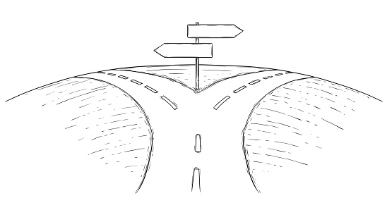

Honestly going into college, I believed that I would focus more on the hardware side of the computer. Slowly I became more interested in the software side of things. I learned to enjoy coding and dare I say became decent at it. While there still is this part of me that likes the small intricate machinery that makes a computer run, I feel more confident in being able to work with websites, applications, and more. Even though I still feel like there is a long path ahead of me I feel more focused about which coding languages to practice, the type of programs to research, and the projects I want to do.
In the next few years I hope, like many others, to have a secure job. Considering my interests, it probably would be a Front/Back-end development job or a programming job in the video game industry, it doesn’t have to be related to games I just think it would be cool. Hopefully by then I have managed a few projects outside of school. A few of my friends have been creating a website but I think the project was put on hold due to school and work. I want to be able to resume that project and have something that I can be proud of. Not to mention all the skills I would be practicing throughout the course of the project.
Speaking about skills, the first thing I must do is create a good foundation in terms of coding language proficiency. Eventually I want to be extremely proficient in about 4 or 5 languages but that is years into the future. I feel this is a good section to briefly discuss Athletic Software Engineering (ASE), ICS 314 uses Workouts of the Day (WODs) to continuously challenge the students while having them practice the skills they are learning. I find this a great method to learn, and I will try to do something similar in the future. For example, I believe doing daily or weekly leetcode problems will not only hone my skills but keep the syntax and the different functions used by different languages familiar. My C++ skills have become rusty simply for the fact that I haven’t had any place to use it in. Hopefully I can stick to my goals and produce quality work that I am proud of.